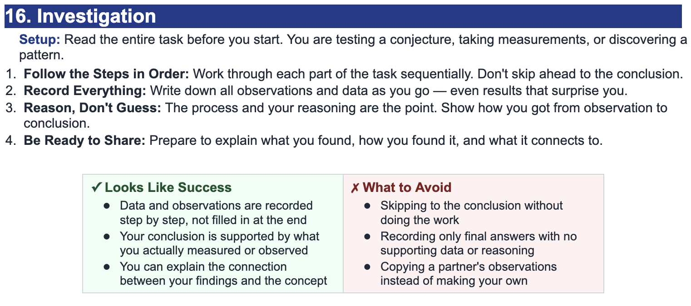

For each function below, find the equation of the tangent line at the two given input values. Name your tangent-line equations using function notation as \(L_1(x)\) and \(L_2(x)\). After you finish, enter the function and your tangent lines in Desmos to check your work.
Let \(f(x)=(x+1)\sin x\).
1. Find the tangent line at \(x=0\). Name it \(L_1(x)\).
2. Find the tangent line at \(x=\pi\). Name it \(L_2(x)\).
Use the derivative to find the slope and the original function to find the point of tangency.
Let \(g(x)=\cos x\,(x^2-1)\).
1. Find the tangent line at \(x=\dfrac{\pi}{2}\). Name it \(L_1(x)\).
2. Find the tangent line at \(x=\pi\). Name it \(L_2(x)\).
Once you have both equations, graph \(g(x)\), \(L_1(x)\), and \(L_2(x)\) together to compare them.
Keep naming the tangent lines with function notation. Write each line in a clear form that you can type directly into Desmos.
Let \(h(x)=(2x^2-x+1)\sin x\).
1. Find the tangent line at \(x=1\). Name it \(L_1(x)\).
2. Find the tangent line at \(x=-1\). Name it \(L_2(x)\).
Let \(p(x)=(x-2)(x+3)\).
1. Find the tangent line at \(x=0\). Name it \(L_1(x)\).
2. Find the tangent line at \(x=2\). Name it \(L_2(x)\).
This one is a product of two polynomials. The same tangent-line process still works.
Complete one more function, then compare how the tangent lines behave near each chosen input value.
Let \(q(x)=x\cos x\).
1. Find the tangent line at \(x=\dfrac{\pi}{2}\). Name it \(L_1(x)\).
2. Find the tangent line at \(x=\pi\). Name it \(L_2(x)\).
3. After graphing both lines, describe how the slope changes from one point to the other.
In Desmos, you can define a function, evaluate the derivative at a specific value, and then graph the tangent line in point-slope form. Use the exact structure shown below.
Suppose \(f(x)=x^2\sin x\).
This graphs the function, calculates the slope at \(x=4\), and then graphs the tangent line at that point.
Suppose \(g(x)=(x+2)\cos x\).
Compare the line Desmos graphs with the equation you found by hand.
Suppose \(h(x)=(x-1)(x+3)\).
This works even when the function is a product of two polynomials.
Instead of checking at one fixed value, you can write the tangent line at a variable point \(x=a\). Then add a slider for \(a\) and watch the tangent line move along the graph.
If the function is \(f(x)\), then the tangent line at \(x=a\) can be graphed as
\[y-f(a)=f'(a)(x-a)\]
After entering the line, click on the variable \(a\) to create a slider.
Add a slider for \(a\), then drag it. Watch how the tangent line changes as the point of tangency moves.
Try several values of \(a\). Notice when the tangent line has positive slope, negative slope, or zero slope.
Choose one of your functions from Part 1. Enter it in Desmos using a new name and create a tangent line with \(x=a\).
Answer the questions below after completing the graphing checks and slider exploration.